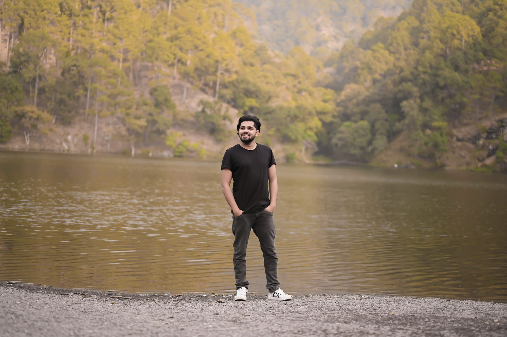

Bateshwar · Agra
Atal Bihari Vajpayee Sanskritik Sankul Kendra
Museum, library and architecture of the cultural complex in Atal ji's ancestral village.
Watch the film
Ad films, brand shoots, documentaries and cinema. Director of Photography on Kathgodam (2025).
From a product on a turntable to a heritage museum at dawn, every frame is lit, shot and finished by hand.
Bareilly · Uttar Pradesh · IndiaAdvertising, cinema, editing, documentary, weddings and podcasts.
A large body of ad films and commercial shoots for brands and local businesses, with concept, camera, lighting and edit handled in-house.
Ad films · Product · Model · Corporate · Business reelsDirector of photography and cinematographer on a feature, short films and music videos.
Feature · Short films · Music videosEdits for creators, brands and agencies in India and abroad, from raw footage to final cut, with colour, sound and motion graphics.
Reels · YouTube · Podcasts · Documentaries · Colour gradingFilms for government projects, heritage sites, museums, schools and hospitals.
Heritage · Government · Institutional · DroneWeddings photographed as heirlooms since 2014: unhurried portraits, honest light, and the quiet moments between the rituals.
Wedding · Pre-wedding · Bridal · MaternityRuns a multi-camera podcast studio in Bareilly and produces long-form episodes for YouTube.
Multi-cam · Editing · ShortsAs cinematographer, 2022 to 2025.
Documentary films across Uttar Pradesh.
Museum, library and architecture of the cultural complex in Atal ji's ancestral village.
Watch the filmRedevelopment of a public park: glow installations, illuminated fountains and landscaped spaces.
Watch the filmThe U.P. Irrigation Department's workshop: its people, machinery and legacy.
Watch the filmOne for films and content, one for weddings.
Ad films, documentaries, brand content, reels, podcasts and post-production for clients in India and abroad.
Wedding photography and films in Bareilly, finished with careful colour and design.